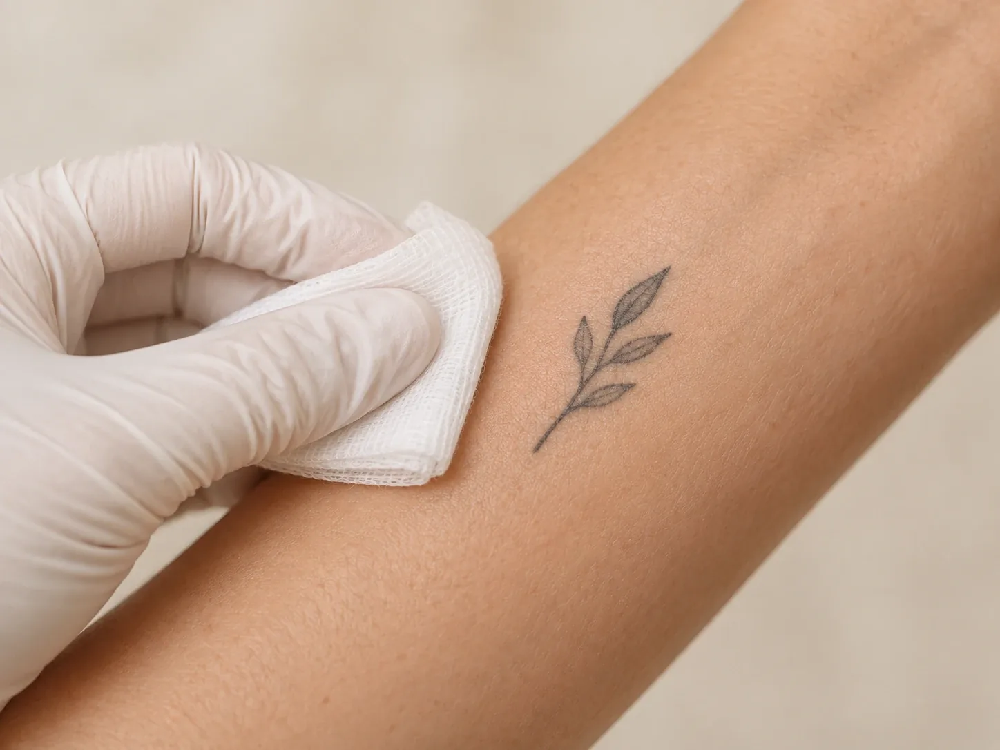

Кожа и внешность
Удаление татуировок
Удаление татуировок: стоимость зависит от размера рисунка.
Число сеансов и интервалы между ними специалист определит после осмотра татуировки.
- Стоимость
- от 7 000 ₽
- Размер
- от 3×5 до 10×10 см

Кому подходит
При удалении татуировок (сведении тату) пигмент в коже постепенно разрушается и выводится организмом. Удалить тату можно в клинике 8.0.8 в Москве, у метро «Римская». Записаться можно ежедневно с 9:00 до 21:00.
К удалению татуировки приходят, когда рисунок перестал нравиться, выцвел, получился неудачным или мешает в работе. Татуировку удаляют за несколько сеансов. Их число зависит от размера, цвета и глубины пигмента, а также от давности рисунка и того, где он находится.
Перед первым сеансом специалист осмотрит татуировку и кожу, проверит противопоказания и расскажет, как ухаживать за зоной между сеансами. Стоимость зависит от размера рисунка.
Размер татуировки
- МаленькаяДо 3×5 см.
- СредняяДо 5×9 см.
- БольшаяДо 10×10 см.
- Рисунок больше 10×10 смСтоимость уточнит администратор.
Противопоказания
- Беременность и кормление грудьюВ эти периоды процедуру не проводят.
- Воспаление и повреждения кожиРаздражение, сыпь, ранки, герпес в зоне татуировки.
- Свежая татуировкаКожа после нанесения рисунка должна полностью зажить.
- Острые инфекции и обостренияПростуда с температурой, обострение хронического заболевания.
- Нарушения свёртываемости кровиА также приём препаратов, которые на неё влияют.
- Склонность к келоидным рубцамЕсли раньше на месте ранок появлялись плотные выпуклые рубцы, скажите специалисту.
- Онкологические заболеванияВопрос о процедуре решают индивидуально.
Как проходит сеанс
- ОсмотрРазмер, цвет и давность татуировки, состояние кожи, противопоказания.
- ПланПримерное число сеансов и интервал между ними.
- СеансОбработка зоны. Ощущения зависят от места и чувствительности кожи.
- УходРекомендации по уходу за кожей и дата следующего сеанса.
Как подготовиться к сеансу
- Здоровая кожаКожа в зоне татуировки не должна быть раздражена, обветрена или повреждена.
- Без солнцаНе загорайте и не пользуйтесь автозагаром перед сеансом.
- Список лекарствСкажите специалисту обо всех препаратах, которые принимаете.
- Удобная одеждаСвободная, которая не будет натирать зону после сеанса.
- Сведения о татуировкеЕсли помните, когда и где делали рисунок, расскажите: это помогает оценить число сеансов.
После процедуры
Специалист расскажет:
- сколько сеансов, скорее всего, понадобится
- какой интервал нужен между сеансами
- как ухаживать за кожей, пока она заживает
- когда можно вернуться к бане, бассейну и спорту
Сколько сеансов нужно и от чего это зависит
Удалить татуировку за один сеанс обычно нельзя. Пигмент разрушается постепенно, и после каждого сеанса организму нужно время, чтобы вывести его частицы. Поэтому удаление тату проходит курсом, а рисунок светлеет от сеанса к сеансу.
Точное число сеансов заранее назвать трудно. Специалист оценит татуировку на осмотре и назовёт примерное количество, а после первых сеансов уточнит его. На него влияют:
- ЦветТёмные пигменты обычно уходят легче. Цветные татуировки, как правило, требуют больше сеансов.
- Глубина и плотность пигментаПрофессиональные татуировки обычно плотнее и глубже любительских.
- ДавностьСтарые татуировки, как правило, удалять проще: часть пигмента уже выведена.
- Место на телеНа кистях, стопах и голенях пигмент часто уходит медленнее, чем на плечах и спине.
- РазмерБольшой рисунок обрабатывать дольше.
- Особенности кожи и организмаТип кожи и то, как быстро она восстанавливается.
Между сеансами нужен перерыв в несколько недель: кожа должна полностью восстановиться. Торопиться не стоит: слишком частые сеансы повышают риск рубцов.
Весь курс из нескольких сеансов с перерывами занимает не один месяц. Если важен срок, например к лету или к важному событию, скажите об этом на осмотре: специалист поможет спланировать сеансы.
Уход после сеанса
После сеанса кожа в зоне татуировки краснеет и немного отекает. Могут появиться корочки или мелкие пузырьки. Обычно это проходит за несколько дней, но полное восстановление длится дольше.
Чтобы кожа зажила без осложнений, важно бережно ухаживать за ней до следующего сеанса:
- Не трогайте корочкиНе срывайте и не расчёсывайте их: они должны сойти сами.
- Держите зону в чистотеМягко промывайте и пользуйтесь средствами, которые порекомендует специалист.
- Без распариванияБаню, сауну, горячую ванну и бассейн можно посещать после разрешения специалиста.
- Без тренияНосите свободную одежду, которая не натирает зону.
- Защита от солнцаЗакрывайте зону одеждой, а когда кожа заживёт, наносите солнцезащитный крем.
Если появились сильная боль, нарастающий отёк, гной или температура, сразу свяжитесь с клиникой.
Вопросы
Сколько стоит удаление татуировки?
Маленькая (до 3×5 см) стоит 7 000 ₽, средняя (до 5×9 см) 9 000 ₽, большая (до 10×10 см) 13 000 ₽. Стоимость для рисунка большего размера уточнит администратор.
Как записаться на удаление тату?
По телефону +7 (938) 099-30-09, ежедневно с 9:00 до 21:00.
Где проходит процедура?
В клинике 8.0.8: Москва, ул. Сергия Радонежского, 15–17, стр. 2, этаж 1. Рядом станции метро «Римская» и «Площадь Ильича».
Сколько сеансов нужно, чтобы удалить татуировку?
Это зависит от размера, цвета, глубины пигмента и давности рисунка. Специалист назовёт примерное число после осмотра.
Какой интервал между сеансами?
Несколько недель: коже нужно полностью восстановиться. Точный интервал специалист назовёт после первого сеанса.
Удаление и сведение тату означают одно и то же?
Да, это два названия одной процедуры.
Можно ли удалить цветную татуировку?
Цветные пигменты обычно уходят медленнее тёмных и требуют больше сеансов. Что можно ожидать для вашего рисунка, специалист скажет после осмотра.
Останется ли след?
Это зависит от того, как была сделана татуировка, от особенностей кожи и от ухода между сеансами. Если были рубцы после нанесения рисунка, они могут остаться.
Больно ли удалять тату?
Ощущения зависят от места и чувствительности кожи. Обсудите это со специалистом до сеанса.
Как ухаживать за кожей после удаления тату?
Не срывать корочки, держать зону в чистоте, не распаривать и не натирать её, защищать от солнца. Подробные рекомендации даст специалист.
Как добраться
- АдресМосква, ул. Сергия Радонежского, 15–17, стр. 2, этаж 1
- Метро«Римская» и «Площадь Ильича»
- Часы работыЕжедневно с 9:00 до 21:00
- Телефон+7 (938) 099-30-09


Имеются противопоказания. Необходима консультация специалиста.